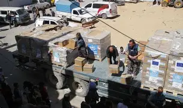

Gaza Faces Severe Famine Amid Blockade

Millions of people in Gaza are facing serious food shortages as the humanitarian situation becomes harder every day. Families are waiting for aid, and many basic goods are not available in markets.
Local organizations are calling for more support and safer access for food and medical supplies. The crisis has affected children, elderly people, and patients the most.
This report highlights the importance of humanitarian work and the need to keep communities informed through clear and responsible news coverage.